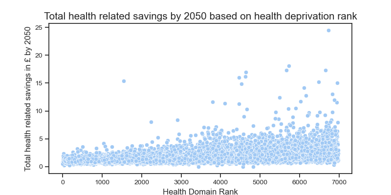

Extra Information

- The scatterplot shows the distribution of total health savings of all small areas
in Scotland.
- These are split based on health domain rank (health deprivation).
- We observe that, on average, more deprived areas are predicted to have a smaller
health-related savings under the current climate action plan by 2050.